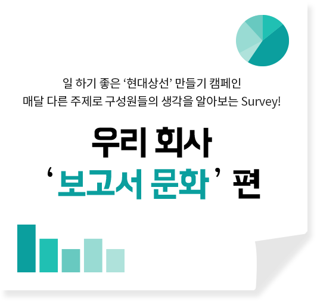
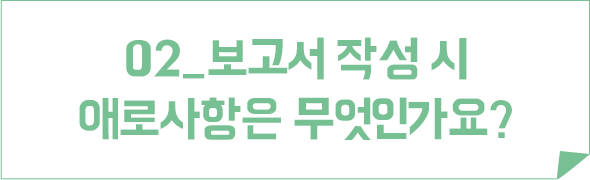
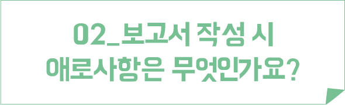
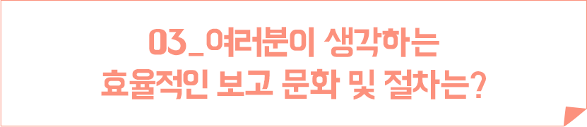
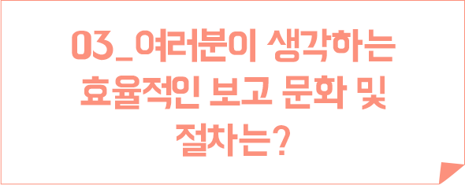

서베이

직장인의 익명 게시판인 B어플에 우리 회사 보고서 문화에 불만을 토로하는 제보가 접수됐습니다. 이 의견에 옹호하는 수많은 댓글도 이어졌는데요. 보고가 업무의 많은 부분을 차지하는 만큼 비효율적인 보고서 문화가 바뀌지 않으면 개인 업무 뿐만 아니라 조직 문화에도 부정적인 영향을 끼칠 것입니다.
보고서 작성 시 애로사항은 무엇이고, 또 지향해야 할 점은 무엇인지 현상인들의 생각을 서베이를 통해 알아봅니다.
(총 3문항)
글 | 편집실
GIFT
서베이에 참여하신 분들께 추첨을 통해
상품권을 드립니다.
(참여 후 응모하기 버튼을 클릭) 


